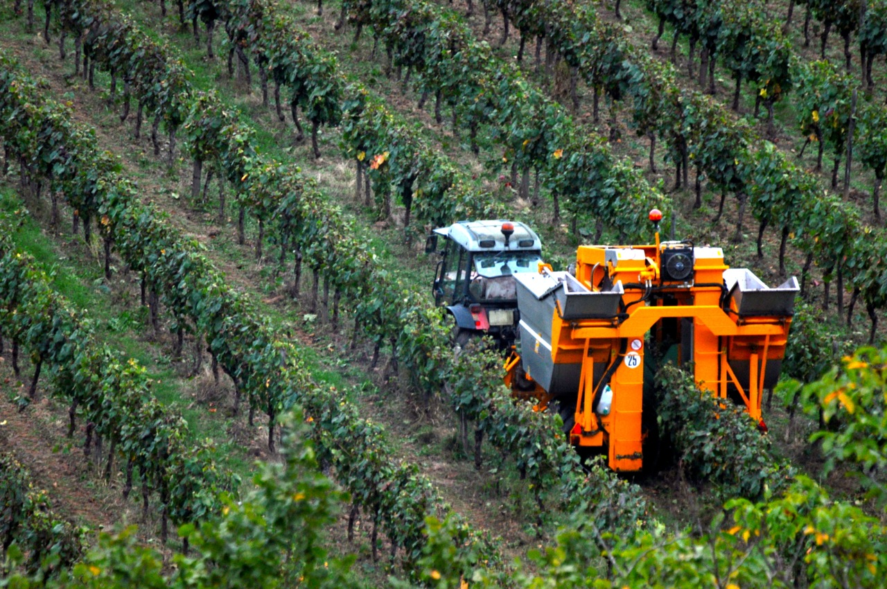
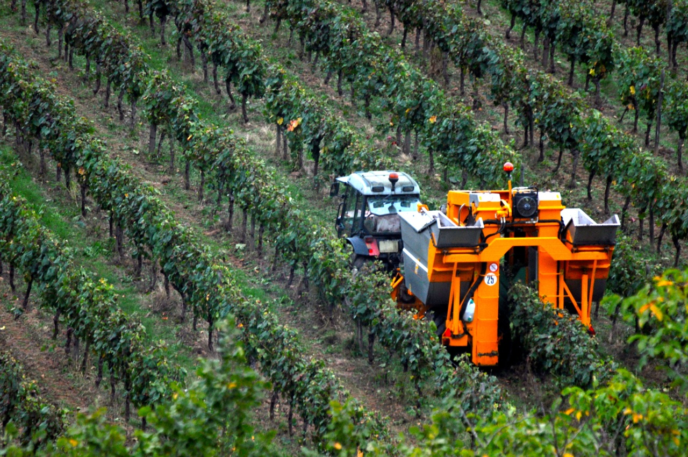

![]()

Conheça
as Linhas
MonteVinho

 

Nome da Comunidade: "Vale do Monte"
Localização: A comunidade "Vale do Monte" está situada na encantadora região de vinícolas conhecida como "MonteVinho". O vale fica em uma área montanhosa com clima mediterrâneo, que proporciona as condições ideais para o cultivo de uvas de alta qualidade.
Parceria com a Vinícola: A vinícola "MonteVinho" estabeleceu uma parceria única com a comunidade. Os membros da comunidade trabalham de mãos dadas com a equipe da vinícola para cuidar das videiras e participar de todas as etapas do processo de produção de vinho. A parceria é baseada em princípios de sustentabilidade, respeito à natureza e apoio mútuo.

Vinho Tinto "Aromas do Vale":
Descubra a perfeita harmonia de sabores neste tinto sedutor. Combinando uvas maduras e um toque sutil de especiarias, Aromas do Vale é o acompanhamento ideal para momentos especiais à luz de velas.

Vinho Sobremesa "Sonho de Afrodite":
Encerre sua experiência com o doce encanto de Sonho de Afrodite, um vinho de sobremesa divinamente sedutor. Seus sabores de frutas maduras e notas suaves de mel são a conclusão perfeita para qualquer refeição.

Vinho Espumante "Estrela da Noite":
Brinde à noite com a exuberância de Estrela da Noite, nosso espumante encantador. Com borbulhas delicadas e um toque frutado, ele transforma cada comemoração em um momento inesquecível.

Vinho Branco "Brisa Matinal":
Um gole deste refrescante vinho branco desperta os sentidos como uma brisa suave pela manhã. Aproveite a experiência cítrica e floral, perfeita para um encontro ao ar livre ou uma tarde descontraída com os amigos.